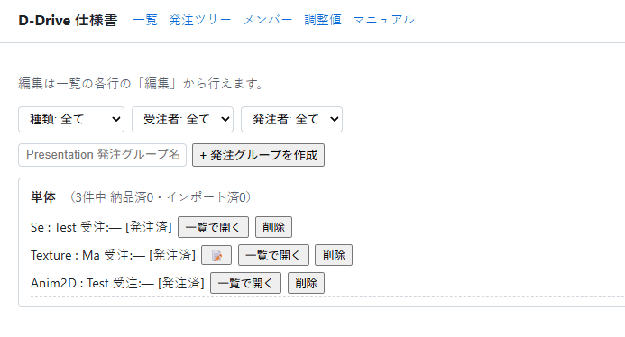
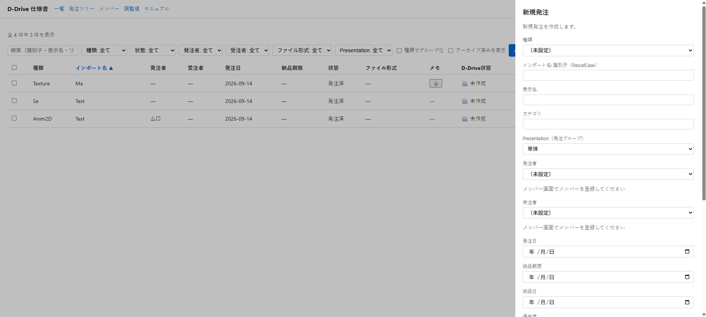
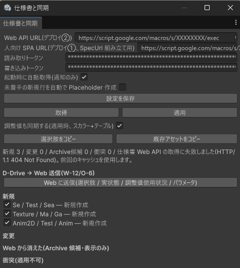

最終更新日: 2026-09-17
「アセット発注ツール」は、企画・デザイナー・プログラマーがブラウザで動く Web アプリ（学内・自宅どちらからでも開けます）を使って、「誰が・何を・いつまでに作るか」をやり取りするための道具です。ここに発注を1件登録するだけで、D-Drive 側に Placeholder（空のデータ） が自動でできます。プログラマーはその場でコードから ID を参照できるようになり、デザイナーは後から中身（音・エフェクト・見た目）を作り込みます。このページは「D-Drive 側でどう同期するか」の説明です。発注ツール自体の入力先・使い方は、ツールのページ上の説明も参照してください。
チームはすでにプロジェクト全体の進行管理をガントチャート（別のスプレッドシート）で運用しています。発注ツールはそれを置き換えるものではなく、役割を分けて連携します。
| 観点 | ガント（既存の進行管理） | 発注ツール（このページの対象） |
|---|---|---|
| 役割 | プロジェクト全体の進行管理（会議・実装・アセット・ドキュメントなど、あらゆるタスク） | アセットの発注だけに特化した授受管理 |
| 状態 | 状態列（自由記述）＋進捗%（人が更新） | 発注済 → 納品済 → インポート済の3段階固定（インポート済のみ D-Drive から自動で進む） |
| 日付 | 開始・終了・日数・先行タスク・営業日計算・週カレンダー・ガントバー | 発注日・納品期限・納品日のみ（先行タスク・進捗%・カレンダーは持たない） |
| 人 | 担当者 1 名 | 発注者（依頼側）・受注者（実際に作る側）の 2 ロール |
| 集計 | 週カレンダー・担当者別進捗・プロジェクトダッシュボード | 発注ツリー（演出単位の集計）・一覧（発注者／受注者の絞り込みに「自分」をすぐ選べます）（進行ダッシュボードのような画面は持たない。ガント側と役割が重複するため作っていません） |
2 つのツールは次の 2 点だけでつながっています。
| 画面 | 内容 |
|---|---|
| 発注ツリー（既定画面） | Presentation を親にして、その下にぶら下がる SE・VFX・Shake などの発注を子として一覧表示します。親を持たない発注は「単体」としてまとめて表示されます。各行に受注者・状態、親（Presentation 発注グループ）には子の件数・納品済／インポート済の集計が出ます。 |
| 一覧 | すべての発注をテーブルで表示。検索、種類・受注者・発注者・Presentation での絞り込み、発注日／納品期限／種類／受注者での並べ替えができます。発注者／受注者の絞り込みには「自分」がすぐ選べるよう先頭に出ます（下の「自分の発注をすぐ見つける」参照）。行をクリック、または各行の「編集」ボタンを押すと詳細（編集）が開きます。 |
| メンバー | 発注者・受注者の選択肢（表記付き名前）を管理する画面。ガントの担当者マスタを貼り付けて一括登録できます。管理者（admin）だけが使えるログイン許可の管理もここにあります。 |
| 調整値 | 数値（スカラー・表形式）を編集するタブ。発注の再定義とは無関係の独立した機能で、そのまま変わらず使えます。詳しくは下の「調整値タブ」を参照。 |

一覧画面の「発注者」「受注者」の絞り込みプルダウンには、先頭に「自分」という選択肢があります（ログイン中のあなたに一致するメンバーが「メンバー」画面に登録されている場合のみ表示されます）。選ぶだけで「自分が発注したもの」「自分が受けたもの」に絞り込めます。列見出し（発注者・受注者・発注日・納品期限・状態・種類）をクリックすると並べ替えもできるので、「自分が受けたもの」を選んで「納品期限」の見出しをクリックすれば、期限が近い順に並びます。
「剣攻撃」のような 1 つの演出（Presentation）は、SE・VFX・カメラ揺れなど複数のアセットの組み合わせでできています。発注ツールではこれをPresentation 発注グループとして親にまとめ、その下に必要な発注を子としてぶら下げます。
発注の状態は発注済 → 納品済 → インポート済の3段階だけです（以前の「未着手/仮/本番/保留」のような細かい状態はありません）。
| 状態 | 意味 | 誰が進める？ |
|---|---|---|
| 発注済 | 発注が登録された直後の状態 | —（初期状態） |
| 納品済 | 受注者が実際に何か（音・エフェクト・見た目）を渡した状態 | 受注者が発注の詳細画面で手動で進めます（納品日が自動で記録されます） |
| インポート済 | D-Drive 側で実際に取り込まれ、必須項目が設定済み（Validation の Error が無い）状態 | 手動では選べません。D-Drive の仕様書同期（下記）で自動判定されたときだけ進みます |
一覧または発注ツリーの「新規」から、種類・カテゴリ・識別子・表示名・発注者・受注者・納品期限などを入力して作成します。Presentation の子として作る場合は、発注ツリーから対象の発注グループの下に作成します。
編集は一覧画面の各行の「編集」ボタン（削除ボタンの隣）から行います。押すと画面が切り替わらず、その場で詳細（編集）パネルが開きます（行をクリックしても同じように開きます。viewer ロールには「編集」ボタンは表示されません）。
発注ツリーの各行には「一覧で開く」ボタンがあります。押すと一覧画面へ切り替わり、検索欄にその発注の識別子が入った状態で、一覧の一番上にその発注1件だけが表示されます。多くの場合そのまま詳細も自動で開きますが、開かなかった場合でも、その1件の行の「編集」を押せば確実に詳細を開けます（以前は発注ツリーにも直接「編集」ボタンがありましたが、画面をまたぐ自動オープンが不安定だったため、この方式に変更しました）。
詳細では発注者・受注者・納品期限・優先度・メモなど、ほぼ全項目を変更できます。
発注の詳細では識別子（インポート名）と種別も変更できますが、これができるのはD-Drive でまだ作成されていない（Placeholder が無く、状態が「インポート済」になっていない）発注だけです。D-Drive で一度作成済み・インポート済になった発注は入力欄が無効化され、「D-Drive で作成済みのため変更できません（変更すると D-Drive 側との対応が切れます）」という理由が表示されます。
発注の詳細画面の「削除（アーカイブ）」を押すと、その発注は一覧から見えなくなります（アーカイブ。実データは消えません）。一覧の「アーカイブ済みを表示」チェックボックスをオンにすると、状態に「（アーカイブ済み）」と付いた形で再表示されます。アーカイブ済みの発注の詳細を開くと、「削除（アーカイブ）」の代わりに「元に戻す」ボタンが出て、押すと通常の一覧に戻ります。
発注の詳細に「ファイル形式」「納品ファイル名」の 2 項目があります。
.wav）。種類ごとに候補が一覧（プルダウン相当）で出ます（例: Se/Bgm なら .wav/.ogg/.mp3、Model/Anim なら .fbx）。候補以外を自由入力することもできます。png のようにドット無しで入力してフォーカスを外すと、自動的に .png の形に揃いますSE_Slash.wav）が表示され、「推奨名を使う」ボタンでそのまま入力欄にコピーできます\ / : * ? " < > |）を入れたり、拡張子とファイル形式が食い違っていても、保存はブロックされません。オレンジ色の注意表示が出るだけです（気付いてもらうための注意で、作業を止めるものではありません）。

発注の詳細には、参考リンクや納品時の注意などを書ける「リファレンス」欄（発注メモ）があります。Markdown に対応しています。
発注・Presentation 発注グループの URL を、人間が読む別の仕様書（ガントのスプレッドシート等）に貼り付けたいときに使います。一覧の各行・発注の詳細・発注グループのヘッダーに「リンクをコピー」ボタンがあります。
[表示名](URL)）」の形式を選べますSpecUrl）も、同期を1回通せば同じ形式のリンクに更新され、「リンクをコピー」で貼ったものと同じ発注の詳細が開くようになります。
発注の詳細には、その種類（例: Se なら SeData）が持つ項目の一覧が読み取り専用で表示されます。項目名・型・説明（D-Drive 側のコードに付いている説明文）に加えて、すでに D-Drive で作成済み（インポート済）のアセットは現在の値も表示されます（ファイル参照は表示名のみで、実データそのものは公開されません）。
「調整値」タブは今回の発注ツールへの作り直しとは無関係の独立した機能で、そのまま変わらず使えます。スカラー値（float/int/bool/string/enum）と表形式（行×列、2026-09-14 追加）の両方を編集でき、ValueDef と同じように D-Drive のコードから読めます。
using DDrive.Generated; // TUNING.キー定数 / TUNING_TABLE / TUNING_COLUMN
using DDrive.Runtime.Tuning;
// スカラー
float hitStopSec = Tuning.GetFloat(TUNING.CombatHitStopSec, defaultValue: 0.05f);
// テーブル型（行×列の表を丸ごと Web で編集できる）
int slimeHp = Tuning.GetTableInt(TUNING_TABLE.EnemyParams, "Slime", TUNING_COLUMN.EnemyParamsHp, defaultValue: 10);
企画が「調整値」タブの数字を変えて同期するだけで、次にゲームを実行したときからその値が反映されます（コードの書き換え不要）。キーが未登録の場合は既定値が使われ、ゲームは止まりません。
発注ツールはチームで許可されたメンバーの Gmail アカウントだけが開けます（学校・会社のドメイン全体に自動で許可するのではなく、1 人ずつの許可リストです）。初めて開くときは Google アカウントでのログインを求められます。
Tools → D-Drive → 仕様書と同期 を開く
Specs/assets.json・Specs/tuning.json というファイルが更新されます。これは発注ツールの内容をそのまま git にコミットする記録用ファイルで、「いつ・何がどう変わったか」を git log で追えるようにするためのものです（発注ツール自体には変更履歴の機能がないため、その代わりを git に持たせています）。このファイルを手で編集する必要はありません。
| 区分 | 意味 |
|---|---|
| 新規 | 発注ツールにあるが D-Drive にまだ無い行。チェックを付けたまま「適用」すると Placeholder が作られる |
| 変更 | D-Drive に既にあるデータと、表示名・カテゴリ・状態・受注者・備考のいずれかが違う行。「適用」すると違う項目だけ書き換わる |
| Web から消えた（アーカイブ候補・表示のみ） | 以前 D-Drive にあるものとして同期されたのに、今回の発注ツールに見当たらない行（Web 側で削除・アーカイブされた等）。ここに出ても何も自動では起きません。削除するかどうかは人が判断してください |
| 衝突（適用不可） | 同じ「種別＋識別子」が 2 件ある、識別子が英語 PascalCase になっていない、種別が不明、などの理由で読み込めなかった行。発注ツール側を直してから再度「取得」してください |
sword_slash（小文字・アンダーバー）になっている」「同じ識別子を別の行にも登録してしまった」です。
同期されたデータの Inspector を見ると、「Assignee（担当）」欄に発注ツールの受注者（実際に作る人）がそのまま入ります。「発注の状態」は Tags 欄に State/発注済 のような形で入ります（専用の欄ではなく、既存の Tags を使っています）。「インポート済」への進行の仕組みは、上の「発注の状態（3段階）」を参照してください。
同期すると、そのデータの SpecUrl に発注ツールの発注の詳細ページの URL が自動的に設定され、Inspector 最上部に「📄 仕様書を開く」ボタンが出ます。押すとブラウザで該当ページが開きます（「人向け SPA URL」が設定されていない場合はボタンは出ません）。
まとめて同期する以外に、Asset Browser の「新規」ダイアログの「仕様書から選ぶ」から、発注ツールにあるけどまだ D-Drive に無いものを 1 件だけ選んで作ることもできます。急いで 1 つだけ欲しい時に便利です。詳しくは Asset Browser のページを参照してください。
「Web に送信」ボタンを押すと、次の内容だけが発注ツールへ送られます。企画側が入力した本文や調整値の値そのものが D-Drive から書き換わることはありません（安全のため送信できる内容がサーバー側で固定されています）。
| 送るもの | 内容 |
|---|---|
| 選択肢 | 種別（AssetType）一覧・既存アセットから収集したカテゴリ一覧。Web 側の入力プルダウンが D-Drive の最新一覧と揃う |
| アセットの実状態 | 作成済みか・Placeholder かどうか・使用箇所数・最終同期時刻（読み取り専用としてアセット詳細に表示される。「インポート済」判定の元になる） |
| パラメータ一覧 | 種類ごとの項目名・型・説明と、インポート済アセットの現在値（上の「パラメータ一覧」参照） |
| 調整値の使用状況 | コードから参照されていない調整値キーの一覧（「未使用」の目印として使う） |